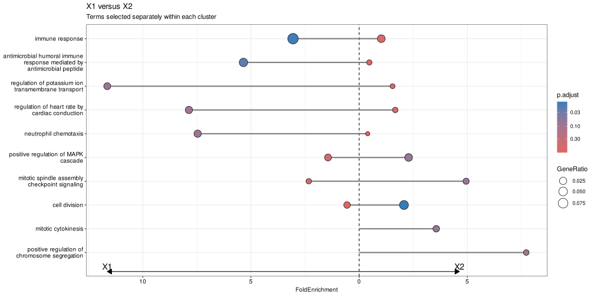

library(clusterProfiler)
library(enrichplot)
library(DOSE)
library(org.Hs.eg.db)
data(gcSample)
data(geneList, package = "DOSE")
# Use a local GO mapping for deterministic compareCluster examples rather
# than requiring the KEGG REST service during every book build.
go_map <- AnnotationDbi::select(
org.Hs.eg.db,
keys = keys(org.Hs.eg.db, keytype = "ENTREZID"),
columns = c("GO", "ONTOLOGY"),
keytype = "ENTREZID"
) |>
dplyr::filter(!is.na(GO), ONTOLOGY == "BP") |>
dplyr::transmute(term = GO, gene = ENTREZID) |>
dplyr::distinct()
go_names <- AnnotationDbi::select(
GO.db::GO.db,
keys = unique(go_map$term),
columns = "TERM",
keytype = "GOID"
) |>
dplyr::filter(!is.na(TERM)) |>
dplyr::transmute(term = GOID, name = TERM) |>
dplyr::distinct()
xx <- compareCluster(
gcSample,
fun = "enricher",
TERM2GENE = go_map,
TERM2NAME = go_names,
universe = names(geneList),
pvalueCutoff = 1,
qvalueCutoff = 1,
minGSSize = 5
)
xx <- pairwise_termsim(xx)30 Compare functional profiles
| Aspect | Comparison views |
|---|---|
| Question | How do functional profiles differ across clusters, conditions, or experimental groups? |
| Input | A checked compareClusterResult with comparable input rules, universe definitions, and database identity across groups. |
| Functions | dotplot() and comparison-specific profile, network, and facet helpers. |
| Output | Comparative term tables and figures that expose shared and group-specific enrichment patterns. |
| Limitations | Visual differences can reflect different input sizes, backgrounds, filtering, or annotation coverage. The plot does not replace a formal between-group model. |
Keep the statistical comparison design in the analysis-engine chapters; use these plots to communicate the resulting profiles.
30.1 Dotplot2: Comparing two clusters
The focused dotplot2() example belongs here because it compares selected groups rather than introducing a new statistical test.
dotplot2(
xx,
vars = c("X1", "X2"),
x = "FoldEnrichment",
showCategory = 5,
label_format = 30,
font.size = 10
) +
ggplot2::labs(
title = "X1 versus X2",
subtitle = "Terms selected separately within each cluster"
)
dotplot2() accepts the same plotting controls as dotplot() but requires exactly two cluster labels in vars. The left and right sides show the selected clusters on a shared fold-enrichment scale; the dashed center line marks no enrichment difference. This is a visual comparison, not a replacement for a formal between-group test.
30.2 Enrichment maps for compareCluster results
compareCluster() produces a standard comparison object. The map below shows how its functional profiles can be compared visually; the statistical design and multiple-testing questions remain in the analysis-engine chapter.
map_guides <- ggplot2::guides(size = "none")
p1 <- emapplot(
xx,
showCategory = 2,
pie = "equal",
min_edge = 0.3,
label_format = 18,
node_label_size = 3.2,
show_category_size_legend = FALSE
) + map_guides
p2 <- emapplot(
xx,
showCategory = 2,
pie = "count",
min_edge = 0.3,
label_format = 18,
node_label_size = 3.2,
show_category_size_legend = FALSE
) + map_guides
p3 <- emapplot(
xx,
showCategory = 2,
pie = "count",
size_category = 1.2,
min_edge = 0.3,
label_format = 18,
node_label_size = 3.2,
show_category_size_legend = FALSE
) + map_guides
p4 <- emapplot(
xx,
showCategory = 2,
pie = "count",
size_category = 1.2,
layout = "kk",
min_edge = 0.3,
label_format = 18,
node_label_size = 3.2,
show_category_size_legend = FALSE
) + map_guides
aplot::plot_list(p1, p2, p3, p4, ncol = 2, tag_levels = "A")
30.3 Next steps
- For the underlying comparison design, see compareCluster.
- For term organization and reporting, continue to evidence integration.